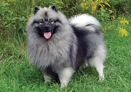

OOP in Python Code
Van theorie naar praktijk: leer hoe je classes, constructors, attributen en methoden schrijft in Python.
Bella en Kees als OOP objects
Laten we kijken hoe we onze honden Bella en Kees kunnen modelleren in Python OOP code.
Bella - 70 cm hoog, 28 kg

Kees - 40 cm hoog, 25 kg
De Hond Class in Python
Hieronder zie je hoe de Hond klasse eruitziet in Python. Let op de verschillende onderdelen:
class Hond: # Class
"""
Een klasse die een Hond representeert.
"""
def __init__(self, naam, hoogte, gewicht): # Constructor
"""
Initializeer een nieuwe hond met basis attributes:
naam (str): The name of the dog
hoogte (float): Hoogte in centimeters
gewicht (float): Weight in kilograms
"""
# Attributes
self.naam = naam
self.hoogte = hoogte
self.gewicht = gewicht
self.energie_level = 100 # start volConstructor (__init__)
De __init__ methode is de constructor. Deze wordt automatisch aangeroepen wanneer je een nieuw object maakt. Hier stel je de beginwaarden in voor je attributen.
Een Methode Toevoegen
Nu voegen we een methode toe waarmee de hond kan rennen:
def ren(self): # Method
"""
Honden rennen en verbruiken energie.
"""
if self.energie_level >= 20:
self.energie_level -= 20
return f"{self.naam} rent vrolijk! Energie level: {self.energie_level}"
else:
return f"{self.naam} is te moe om te rennen. Geef iets te eten!"Belangrijk: self
Het keyword self verwijst naar het huidige object. Hiermee kun je de attributen van dat specifieke object gebruiken en aanpassen.
Objecten Aanmaken
Nu kunnen we onze honden Bella en Kees aanmaken als objecten:
# Objects
hond_bella = Hond("Bella", 70, 28)
hond_kees = Hond("Kees", 40, 25)Wat gebeurt hier?
Hond("Bella", 70, 28) roept de constructor aan met de naam "Bella", hoogte 70 cm en gewicht 28 kg. Dit maakt een nieuw Hond-object aan met deze waarden.
Key Points
class Hond:definieert de klassedef __init__(self, ...):is de constructorself.attribuut = waardestelt een attribuut indef methode(self):definieert een methodeHond("naam", waarde, waarde)maakt een nieuw object
Test je kennis
1. Welke methode wordt automatisch aangeroepen bij het maken van een object?
2. Waar staat 'self' voor in een Python class?
3. Hoe maak je een nieuw Hond object met naam "Max", hoogte 60 en gewicht 30?